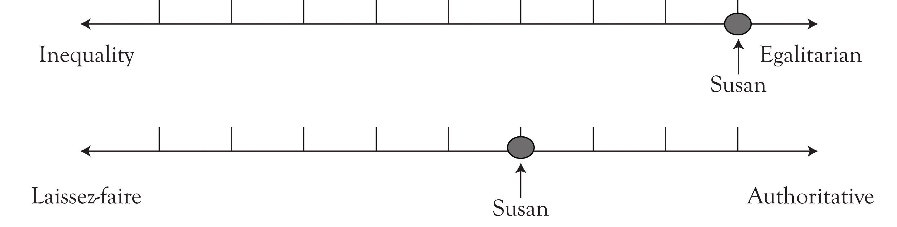
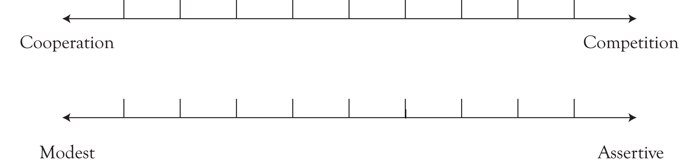
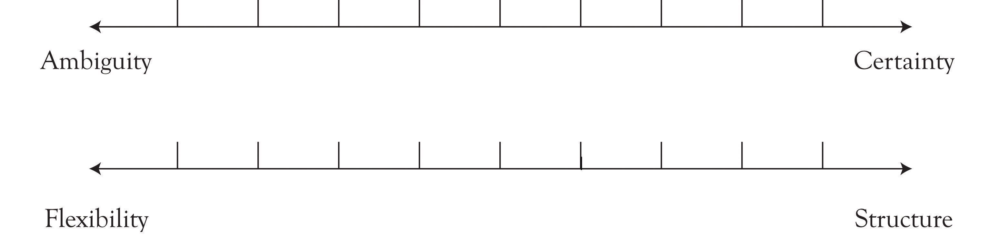
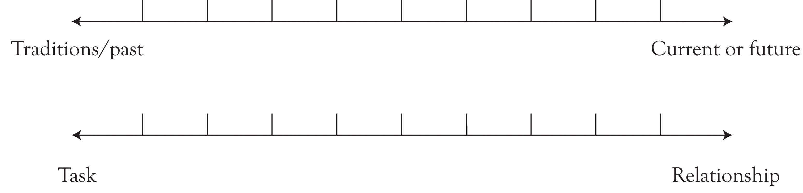

The work of Geert Hofstede,Hofstede (2001). while employed at IBM in the late 1960s to early 1970s, still stands as one of the most comprehensive studies of cultural values on leadership in the workplace. From his data collected from over 30 countries and 100,000 individuals, Hofstede created a model of value dimensions that speak to the ways that cultures tend to operate. Although this study is generalized to specific countries, his work on cultural value dimensions is helpful to any business doing global and multicultural work.
According to Hofstede, the five main dimensions are identity, power, gender, uncertainty, and time. You can think about cultural value dimensions on a scale or a continuum, where one aspect of the value lies on one side of the scale and the other extreme lies at the other end of the scale.
Table 2.2 Five Cultural Value Dimensions
| Value Dimensions | One Extreme | Other Extreme |
|---|---|---|
| Identity | Group | Individual |
| Power | Egalitarian | Hierarchal |
| Gender | Feminine | Masculine |
| Uncertainty | Ambiguity | Structure |
| Time | Relationship | Task |
Cultural value dimensionsFive elements—identity, power, gender, uncertainy, and time—that provide a perspective of culture. help you to understand culture and to be able to make sense of culture. These dimensions provide you with a perspective of culture for yourself as well as a perspective of how others perceive their culture. All cultures experience these dimensions of difference in many ways, and different cultures solve these differences in many ways. Becoming aware of these concepts helps you to figure out the experiences you have in relation to your culture. It helps to make that experience less ambiguous and threatening. Cultural value dimensions provide clarity and a starting place for cultural awareness. However, they are often seen as intangible and under the waterline, but once you adapt to the cultural dimensions, you become more comfortable and do not see the cultural difference.
The value dimension of identityA cultural value dimension that refers to the attention of groups or individuals toward group needs versus individual needs as well as toward individual achievement and interpersonal relationships. refers to the attention of groups or individuals toward group needs versus individual needs as well as toward individual achievement and interpersonal relationships. On a continuum, you see the identity value dimension expressed as such in Figure 2.5 "Dimension of Identity".
Figure 2.5 Dimension of Identity

On one spectrum, there is an expectation of doing things for the group rather than for oneself. On the other side, achievements and needs are individualized. HofstedeHofstede (2001). found that cultures placing a high value on individualism and a low value on collectivism valued individual rights; cultures placing a high value on collectivism valued relationships and harmony. This orientation, he argued, can have a large affect on managing organizations and people.
For example, in many Latino cultures, the concept of family, la familia, is critical to their cultural history and social systems. La familia is the most important social unit and includes extended family members. Decision making, conflict resolution, and negotiation are based on group needs rather than individual preferences; through paying attention to group and collective needs, harmony and relationships are intact. Alternatively, in individualistic cultures, the need of the individual comes first. U.S. culture teaches this to children at a young age. The following is an example that illustrates the differences between individualistA type of culture that places importance on decision making, conflict resolution, and negotiation based on individual preferences rather than group needs; personal disclosure; and individual achievements and needs. and collectivist culturesA type of culture that places importance on decision making, conflict resolution, and negotiation based on group needs rather than individual preferences; doing things for the group rather than for one’s self; a lack of personal disclosure; group public image in social contexts; and maintaining relationships.:
Mary takes her eight year old, Johnny, to the store to buy ice-cream. She asks him to choose what ice-cream flavor he would like. Over time he learns to tell his mother about his personal likes and dislikes. Every time his mother responds to his decisions with encouragement. Over time he learns that he can and should be able to express himself.
By encouraging her child to make decisions and choices on his own, Mary raises a child that considers his personal needs and wants. If Johnny was in a group that operated more collectively, he might become quite upset when told that the whole group must agree to a specific ice cream flavor, that is, that his personal choice does not matter in the group decision.
The following is another example of individual and collective cultures:
A history teacher gives a lesson on the Bill of Rights to her students. She explains that everyone has individual rights and liberties. Sahara is a student in the class. She is thirteen years old and a recent immigrant from Somali. She learns that she has individual rights and to the disappointment and frustration of her parents, her behaviors begin to change at home. She comes home late from school, she stops doing her chores, and she talks back to her mother. She says, “I can do whatever I want. In this country, I am free!”
Sahara comes from a culture that is collective and tribal in nature. Her parents express confusion when they hear her say, “I can do whatever I want.” They do not understand what she means and why she says what she says. They begin to think that she is losing her cultural values.
The following is another example that illustrates the value differences between collectivist and individualist cultures:
Tabitha is 22 years old and moves in with her college boyfriend, Randy, to an apartment near her parents. Tom and Susan, Tabitha’s parents, are excited that she is able to be independent and to live on her own.
Xioli is Tabitha and Randy’s friend from college. She is Chinese American and wants to move out of her parents’ house. Randy and Tabitha have offered the second bedroom space for Xioli in their apartment. Xioli’s parents think she is too young to live on her own. They also think it is a sign of disrespect to them if she, as a single woman, lives with a man.
Hofstede defined powerA cultural value dimension that refers to the strict rules that establish the types of relationships individuals have with one another. distance dimensions as maintaining strict rules that establish the types of relationships individuals have with one another. Power represents the level of inequality and equality, as well as the level of hierarchy and upward mobility, within a cultural group. In regard to leadership, power dimension can also represent a culture’s tendencies toward authority, on one end, and one’s orientation toward laissez-faire leadership, on the other. Hofstede found that low-power-distance cultures emphasized equality and minimized power and status. The following is an example of this:
Susan is the president of a large manufacturing business. Although she is in a position of leadership and authority, she takes a “hands off management approach” to her employees, and in meetings provides a participatory, democratic engagement process.
Susan’s dimension of power is illustrated in Figure 2.6 "Power Value Dimension".
Figure 2.6 Power Value Dimension
HofstedeHofstede (2001). describes the value dimension of genderA cultural value dimension that represents two paradigms of thinking and practice about the world in relation to the traditional values associated with gender roles. as representing two paradigms of thinking and practice about the world in relation to traditional values associated with gender roles. Gender refers to the culture’s tendencies or orientation toward enforcing or reinforcing masculine and feminine roles in work. Masculine cultures tend to emphasize ambition, control, competition, assertiveness, and achievement, whereas feminine cultures emphasize nurture, care, sharing, quality of life, and relationships. Sometimes these values are expressed as the “quantity of life” and the “quality of life.”
In his findings, Hofstede indicated that cultures that rate high in masculinity, such as Japan, Austria, Venezuela, and Italy, revealed a high proportion of males in dominant structures; in low masculine cultures, such as Denmark, Norway, Netherlands, and Sweden, women were treated more equally in their social systems.
It is important that you recognize that these values are not associated with being male or female. In other words, this does not mean that men cannot be part of feminine cultures or that women do not orient themselves toward “masculine” cultural values. Finally, like other value dimensions, gender dimensions can vary greatly within any culture.
You can think about the value dimension of gender in the ways displayed in Figure 2.7 "Gender Dimensions".
Figure 2.7 Gender Dimensions
The dimension of uncertaintyA cultural value dimension emphasizing that cultures are either oriented toward uncertainty or toward creating certainty and stability. emphasizes cultures that are either oriented toward uncertainty or toward creating certainty and stability. Hofstede described this as a society’s tolerance for ambiguity.Hofstede (2001). Societies that are in high uncertainty avoidance are rule-bound and pay more attention to written procedures, rules, or goals. Individuals who have a higher need for formalized structures, procedures, or diplomacy tend to minimize their uncertainty levels in order to cope with the unknowns of their situations. Someone who is on the other extreme of the dimension is more relaxed about the rules and procedures; they are more flexible in their attitudes toward rules and policies. The value dimension can be expressed in the ways shown in Figure 2.8 "Uncertainty Value Dimension".
Figure 2.8 Uncertainty Value Dimension
This dimension also speaks to a culture’s orientation toward directness and honesty. Edward HallHall (1981). popularized the terms “high-text” culture and “low-text” culture to describe cultural differences between two different types of societies. The ideas are often used to describe the ways in which cultures communicate and to understand what cultural constructs underlie the communication.
High-context cultures are societies in which people often make inferences; they leave things unsaid, knowing that the other person would understand what was implied in the communication. People in these societies tend to rely on groups for support. Low-context cultures are societies that are explicit and direct in their communication. They generally are more comfortable relying on themselves, as individuals, and working out solutions to problems. Like high-context cultures, relationships are important to low-context societies; the difference is in the longevity of the relationships. Generally, low-context societies have many relationships that are less intimate and close than those of high-context cultures.
Both types of cultural differentiations are illustrated in Table 2.3 "High and Low Context Culture Descriptors".
Table 2.3 High and Low Context Culture Descriptors
| Cultural Context | Countries/Cultures | Descriptors | How They Perceive the Other Context |
|---|---|---|---|
| High context | Spain |
|
Low-context cultures are…
|
| Mexico | |||
| Greece | |||
| Middle East | |||
| China | |||
| Japan | |||
| Korean | |||
| Thailand | |||
| Low context | United States |
|
High-context cultures…
|
| Germany | |||
| Great Britain | |||
| Australia |
The dimension of timeA cultural value dimension that speaks to how communities are oriented to space and time, including their tendencies toward traditions and the past, and their orientation toward the future and the present. speaks to how communities are oriented toward space and time, including their tendencies toward traditions and the past, and their orientation toward the future and the present. In many cultural systems, holding on to traditions is important in current day-to-day operations and relationships. Some societies will refer to traditions to preserve and maintain cultural norms, that is, to protect what currently exists.
Time is also a reference to a culture’s orientation toward tasks or relationships. For example, a manager from the United States who travels to India to negotiate a business contract needs to know that meetings will occur whenever people show up to the meeting, which could be hours after it is scheduled. A task-oriented leader is certain to be frustrated when he meets up with an Indian who is more time-oriented toward relationships. In the American perspective, promptness is professionalism; yet, in the other perspective, the concept of time is more loose and flexible. The value of time is illustrated in Figure 2.9 "Time Value Dimension".
Figure 2.9 Time Value Dimension
Understanding these five value dimensions and their impact in different cultural systems will be helpful to your work in cultural intelligence. Like any cultural model, you need to recognize that cultural factors in leadership and organizations, as indicated by Taylor Cox, differ “across gender, nationality, and racial/ethnic groups as it relates to time and space orientation, leadership style orientations, individualism versus collectivism, competitive versus cooperative behavior, locus of control, and communication styles.”Cox (1994), p. 108. You must recognize that microcultures exist within macrocultures; this is significant in working effectively on a cross-cultural level.Cox (1994), p. 106.